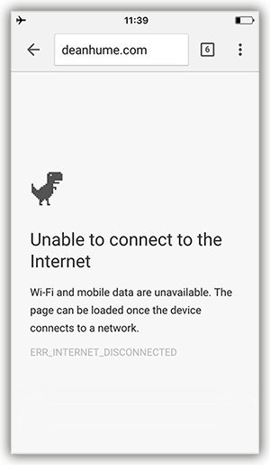
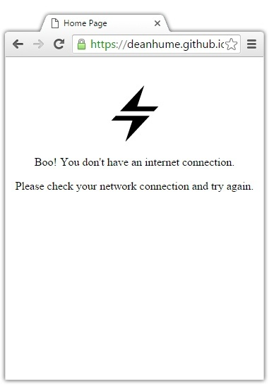

Let's imagine for a second that you are on a train. The train is cruising through the countryside and you are reading an awesome article on the web using your mobile device. At the same moment that you click on a link to view more details, the train suddenly disappears under a tunnel. You've just lost connectivity and are presented with a web page that looks a little something like this:

This can a pretty frustrating experience! Fortunately there are a few things that we can do as web developers to improve the browsing experience for our users. I've been playing around with Service Workers quite a lot lately and am always surprised by the endless possibilities that they bring to the web. One of the great features of Service Workers is that they allow you to intercept network requests and decide how you want to respond.
In this article, I am going to use this feature to check if a user has connectivity and respond with a really simple offline page if they aren't connected. It's a really basic example, but it will give you an idea how easy it is to get up and running! If you're not familiar with Service Workers, I recommend checking out this Github repo for more info.
Before we get started it might be worth simply explaining how the flow of this example will work:
- The first time a user visits our web page, we install the Service Worker and add our offline HTML page into the browsers cache
- Then, if a user tries to navigate to another web page, but isn't connected to the internet, we can then return the cached offline HTML page as a response instead
- But, if the user tries to navigate to another web page and has connectivity, we simply continue as normal
Getting started
Imagine that you have the following HTML page. It's pretty basic, but it gives you the general idea.
<!DOCTYPE html>
<html>
<head>
<meta charset="UTF-8">
<title>Home Page</title>
</head>
<body>
<div style="text-align:center; margin-top:40px;">
<img src="./img/online.svg" width="80" height="80" />
<p>Nice! You are currently online.</p>
<div>
</body>
</html>
12345678910111213Next, let's register our Service Worker in the page that we have just created. Add the following code to your HTML.
| <script> | |
| // Register the service worker | |
| if ('serviceWorker' in navigator) { | |
| navigator.serviceWorker.register('/service-worker.js').then(function(registration) { | |
| // Registration was successful | |
| console.log('ServiceWorker registration successful with scope: ', registration.scope); | |
| }).catch(function(err) { | |
| // registration failed :( | |
| console.log('ServiceWorker registration failed: ', err); | |
| }); | |
| } | |
| </script> |
Next, we need to create the Service Worker file and call it 'service-worker.js'. We are going to use this Service Worker to intercept any network requests, check for connectivity and respond with the best content for the user.
| 'use strict'; | |
| var cacheVersion = 1; | |
| var currentCache = { | |
| offline: 'offline-cache' + cacheVersion | |
| }; | |
| const offlineUrl = 'offline-page.html'; | |
| this.addEventListener('install', event => { | |
| event.waitUntil( | |
| caches.open(currentCache.offline).then(function(cache) { | |
| return cache.addAll([ | |
| './img/offline.svg', | |
| offlineUrl | |
| ]); | |
| }) | |
| ); | |
| }); |
In the code above, we are adding our offline page into the cache when we install the Service Worker. If we break the code down a little, you can see in the first few lines I am specifying the cache version and the URL for the offline page. If you had different versions of your cache, you would simply bust the cache by updating this version number. Around line 12, I am making a request for this offline page and it's resources and when I have a successful response, it gets added to the cache.
Now that the offline page is stored in cache, we can retrieve it whenever we need to. In the same Service Worker, we need to add the logic to return the offline page if we have no connectivity.
| this.addEventListener('fetch', event => { | |
| // request.mode = navigate isn't supported in all browsers | |
| // so include a check for Accept: text/html header. | |
| if (event.request.mode === 'navigate' || (event.request.method === 'GET' && event.request.headers.get('accept').includes('text/html'))) { | |
| event.respondWith( | |
| fetch(event.request.url).catch(error => { | |
| // Return the offline page | |
| return caches.match(offlineUrl); | |
| }) | |
| ); | |
| } | |
| else{ | |
| // Respond with everything else if we can | |
| event.respondWith(caches.match(event.request) | |
| .then(function (response) { | |
| return response || fetch(event.request); | |
| }) | |
| ); | |
| } | |
| }); |
In the code above we are listening out for the fetch event, and if we detect that the user is trying to navigate to another page and if there is an error whilst doing so, we simply return the offline page from cache. Easy!
In order to test this functionality, you can use the built-in Developer Tools in Chrome. Start by navigating to your web page, and once the Service Worker has installed head over to the Network tab and change the throttling to Offline.

If you refresh the page, you should see your offline page!

If you simply want to test this functionality without writing any code, I've created a demo page on Github that you can experiment with. All of the code for this example is also available on the Github repo.
I understand that the page used in this example is really simple, but what you decide to add to yours is up to you! If you wanted to take this example further, you could include cache busting for the offline page as shown in this example.
Further reading
There are some great examples of offline functionality out there in the wild. For example, The Guardian built an offline web page that has a crossword puzzle - so if you are offline at least you can have a little fun while waiting to reconnect. I also recommend taking a look at the Google Chrome Github repo that contains a load of different Service Worker samples - there are some great use cases in there!
However, if you prefer to skip the code above and simply let a library handle this all for you, I recommend checking out UpUp. It's a tiny script that gives you out-of-the-box offline functionality.